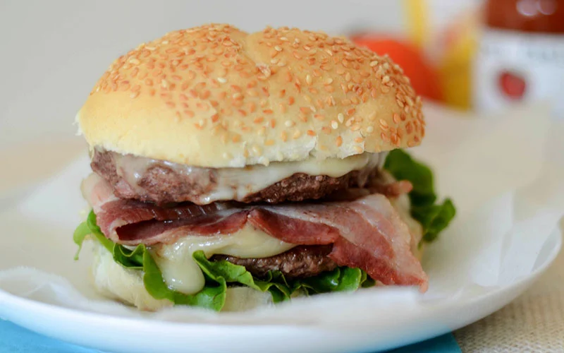

Bodybuilder's Double Beef & Bacon Cheeseburger Recipe

Get your burger fix with this double bacon cheeseburger
that packs in more than 53g of protein and half the calories of a fast food burger!
Ingredients:
- 2-4oz of Lean Beef Patties
- 1 slice Reduced Fat White Cheddar Cheese
- 1 slice Turkey Bacon
- 1 tsp. Hickory Liquid Smoke
- 1 Hamburger Roll
For more information, visit the original website .